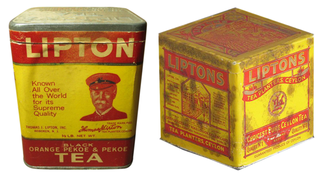

홈 > 브랜드 매거진 > 무신사
무신사
무신사는 한국 패션 플랫폼 브랜드입니다. 온라인 패션 커머스, 브랜드 입점, 자체 콘텐츠, 오프라인 스토어를 통해 국내 디자이너 브랜드와 젊은 소비자를 연결합니다.
산업 분야 리테일·커머스 · 공개 등급 디렉토리 · 브랜드 평가 4.2 ★
MU
무신사
한눈에 보는 브랜드
무신사는 한국 패션 플랫폼 브랜드입니다. 온라인 패션 커머스, 브랜드 입점, 자체 콘텐츠, 오프라인 스토어를 통해 국내 디자이너 브랜드와 젊은 소비자를 연결합니다.
브랜드 관점
무신사 항목은 단순한 이름 목록이 아니라 리테일·커머스 시장 안에서 어떤 역할을 하는지 읽기 위한 기준점입니다. 제품·서비스 범위, 유통 방식, 시각 아이덴티티, 시장 포지션을 함께 비교하면 같은 산업의 다른 브랜드와 차이가 선명해집니다.
시작과 성장
무신사는 2001년 온라인 패션 커뮤니티에서 출발해 패션 플랫폼으로 성장했습니다.
브랜드 아이덴티티
무신사의 정체성은 스트리트 패션 커뮤니티, 브랜드 큐레이션, 온라인 커머스, 오프라인 편집 매장 경험에서 형성됩니다.
제품과 서비스
주요 제품·서비스: 온라인 패션 플랫폼, 브랜드 스토어, 편집숍, 패션 콘텐츠, PB·입점 브랜드
현재 상태
타임라인
BI/CI 변천사
확인된 BI/CI 이미지가 아직 없습니다.
함께 읽을 브랜드
 리테일·커머스 · 자료 기반마이크로소프트 스토어
리테일·커머스 · 자료 기반마이크로소프트 스토어마이크로소프트 스토어는 미국의 리테일·커머스 브랜드로, 상품 큐레이션, 가격 체계, 매장·온라인 유통, 구매 편의성이 브랜드 인식을 좌우하는 영역입니다.

리테일·커머스 · 자료 기반립톤립톤는 리테일·커머스 브랜드로, 상품 큐레이션, 가격 체계, 매장·온라인 유통, 구매 편의성이 브랜드 인식을 좌우하는 영역입니다.
리테일·커머스 · 자료 기반스토케스토케는 노르웨이의 리테일·커머스 브랜드로, 상품 큐레이션, 가격 체계, 매장·온라인 유통, 구매 편의성이 브랜드 인식을 좌우하는 영역입니다.
 리테일·커머스 · 자료 기반양키캔들
리테일·커머스 · 자료 기반양키캔들양키캔들는 미국의 리테일·커머스 브랜드로, 상품 큐레이션, 가격 체계, 매장·온라인 유통, 구매 편의성이 브랜드 인식을 좌우하는 영역입니다.
 리테일·커머스 · 자료 기반이마트
리테일·커머스 · 자료 기반이마트이마트는 대한민국의 리테일·커머스 브랜드로, 상품 큐레이션, 가격 체계, 매장·온라인 유통, 구매 편의성이 브랜드 인식을 좌우하는 영역입니다.
 리테일·커머스 · 자료 기반디엠-드로게리 마크트
리테일·커머스 · 자료 기반디엠-드로게리 마크트디엠-드로게리 마크트는 독일의 리테일·커머스 브랜드로, 상품 큐레이션, 가격 체계, 매장·온라인 유통, 구매 편의성이 브랜드 인식을 좌우하는 영역입니다.
 리테일·커머스 · 자료 기반베드 베스 앤드 비욘드
리테일·커머스 · 자료 기반베드 베스 앤드 비욘드베드 베스 앤드 비욘드는 미국의 리테일·커머스 브랜드로, 상품 큐레이션, 가격 체계, 매장·온라인 유통, 구매 편의성이 브랜드 인식을 좌우하는 영역입니다.
 리테일·커머스 · 자료 기반베스트 바이
리테일·커머스 · 자료 기반베스트 바이베스트 바이는 미국의 리테일·커머스 브랜드로, 상품 큐레이션, 가격 체계, 매장·온라인 유통, 구매 편의성이 브랜드 인식을 좌우하는 영역입니다.